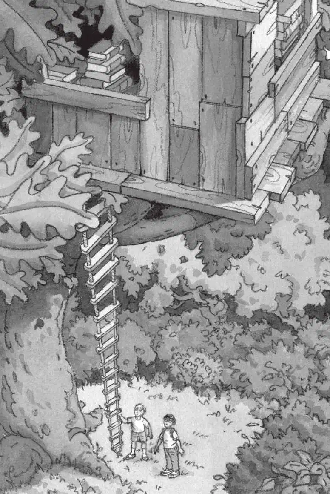
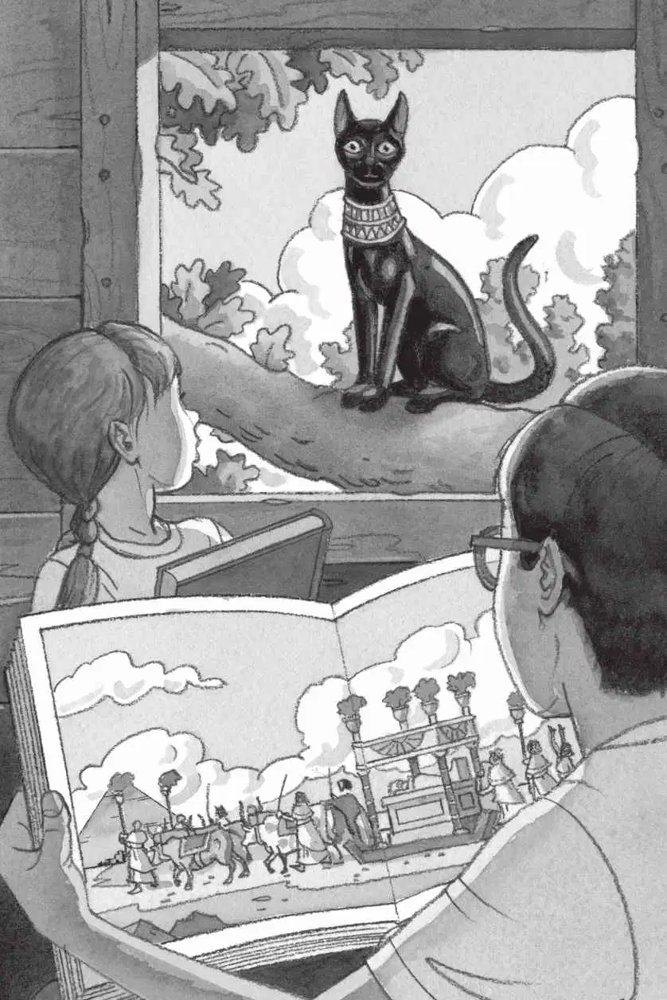

“它还在呢。”杰克说。
“看上去里面没人。”安妮说。
杰克和他七岁的妹妹安妮，抬头往一棵很高很高的大橡树上看。在树梢上，有一座树屋。
晌午的阳光映照着树林，吃午饭的时间快要到了。
“嘘！”杰克突然说，“那是什么声音？”
“什么声音？”安妮问。
“我听到有声音。”杰克扭头看了看四周说，“好像是谁在咳嗽。”
“我什么也没听见呀。”安妮说，“快点儿，我们上去吧。”她一把抓住绳梯，开始往上爬。
杰克踮着脚走向一簇灌木丛，用手拨开一根小树枝。
“喂？”他问，“有人吗？”
没人回答。
“杰克！快点儿呀！”安妮在上面喊道，“树屋看上去跟昨天一模一样。”
杰克还是感觉附近有人。
“会不会就是把书放在树屋里的那个人呢？”杰克想。
“杰——克！”安妮又喊。
杰克的目光越过灌木丛的顶部，仔细观察。
难道那个“M”此刻正注视着他？或许他是想要回金勋章——就是杰克在恐龙时代冒险时捡到的那个。又或许，他是想要回皮书签——就是夹在骑士和城堡书里的那枚。勋章上有字母M，书签上也有字母M。可是M代表了什么呢？
“明天我把这两样东西都拿回来。”杰克冲着灌木丛大声喊道。
一阵微风吹过树林，树叶发出唰唰的响声。
“快点儿！”安妮大声催促道。
杰克回到大橡树下，抓住绳梯，爬了上去。
爬到树顶后，他从树屋地板上的圆洞钻了进去。然后他扔下双肩包，把眼镜往上推了推。
“今天我们挑哪本书呢？”安妮看着树屋里散落在各处的书说。
她拿起那本骑士和城堡书。就在昨天，骑士和城堡书把杰克和安妮带到了骑士时代。
“嘿，书不潮了。”安妮说着把书递给了杰克。
“真的啊！”杰克惊讶地说。这本书曾经被护城河的水给浸湿了，可是今天，它看上去又好好的了。杰克在心里默默地感谢那名救了他们的神秘骑士。
“当心！”安妮突然在杰克面前挥了挥那本恐龙书。
“把它拿开。”杰克紧张地说。就在前天，这本恐龙书把他们带到了恐龙时代。杰克在心里默默地感谢那只把他从霸王龙身边救出来的无齿翼龙。
安妮把恐龙书跟其他书放在了一起。突然，她惊讶地吸了口气。“哇！”她轻声叹道，“看看这个。”她举起一本关于古埃及的书。
杰克屏住呼吸，接过安妮手里的书。书里夹着一枚绿色的丝绸书签。
杰克把书翻到夹着书签的那一页，是一幅金字塔的图片。
画面上，一支长长的队伍正朝金字塔走去。队伍前面，有四头长着犄角的大牛在拉一架橇，橇上放着一个金色的长匣子。橇后面，跟着许多埃及人。队伍最后还有一只毛质光滑的黑猫。
“我们就去这儿吧，”安妮轻声说，“现在就去。”
“等等。”杰克说。他想把这本书再好好研究一下。
“金字塔啊，杰克，”安妮说，“你不是最喜欢金字塔吗？”
的确，在杰克最喜欢的事物里，金字塔肯定排在前面，紧跟在骑士和恐龙之后——当然，这不包括肉食性恐龙。
他倒不用担心会被一座金字塔吃掉。
“好吧。”他说，“但是别忘了拿那本宾夕法尼亚的书，说不定我们马上就想回来呢。”
安妮找到了那本书，书里画着他们的家乡：宾夕法尼亚州的蛙溪。
杰克指着埃及书上的金字塔，清了清嗓子说：“请带我们去这里。”
“喵！”
“那个是什么？”杰克向窗外望去。

一只黑猫正蹲在树枝上，眼睛直盯着杰克和安妮。
杰克从没见过这么奇怪的猫：全身的毛乌黑光滑，一双黄澄澄的眼睛闪闪发亮，脖子上戴着一个宽宽的金项圈。
“是埃及书里的那只猫。”安妮轻声说道。
起风了，树叶开始颤抖。
“我们出发了！”安妮大声叫道。
风声越来越响，树叶颤抖得更厉害了。
杰克闭上了眼睛。
树屋开始旋转，越转越快。
然后，一切都静止了。
完完全全地静止不动了。